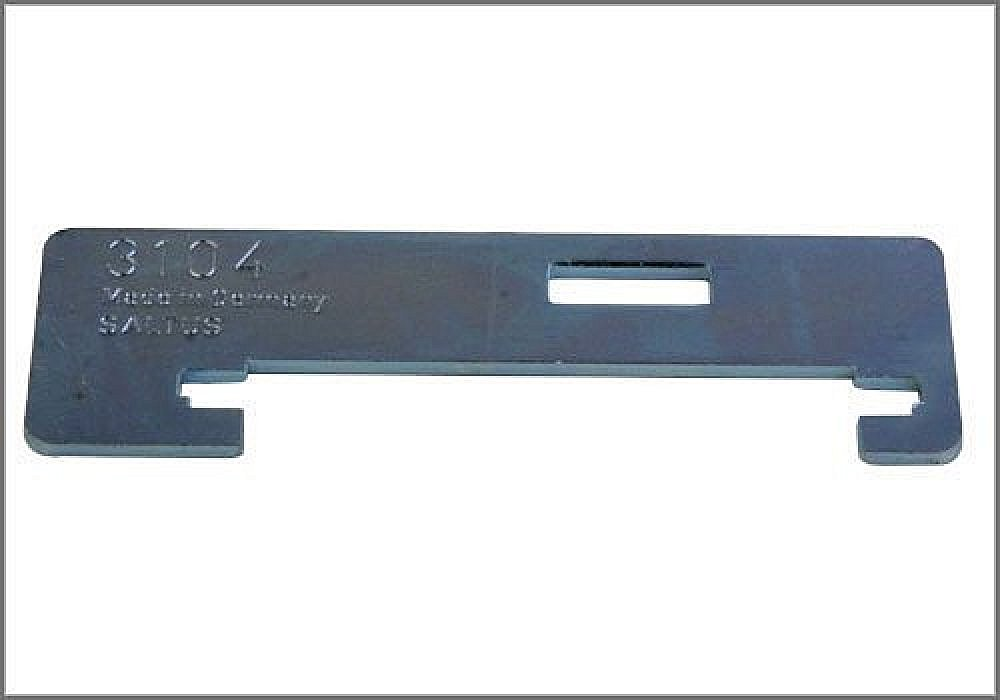

Shift Linkage: Tools and Equipment
Alignment Plate
AST tool# 3104

Used when adjusting the transmission shift linkage. Applicable to 1985 and newer VW Golf and Jetta with 5 speed manual gearbox.
- Used for Transmission Shift Linkage Adjustments
- Steel Construction
Contact AST for pricing.
Assenmacher Specialty Tools
1-800-525-2943